HISTORICAL CRADLE
三大文明交織的風土基因
斯洛維尼亞是歐洲唯一同時座落於阿爾卑斯山脈、地中海海岸、潘諾尼亞平原與喀斯特高原的國度。三大歐洲主流文明在此撞擊融合，造就了舉世無雙的農耕智慧。
斯拉夫文明遺產（Slavic Heritage）
森林之子：人與木的靈性共生與互助社群
斯拉夫民族帶著深厚的「森林自然崇拜」定居於此。農村社會以「Soseska」（鄰里共耕互助會）為核心，發展出全世界獨一無二的木造乾草架（Kozolec）與無煙囪黑廚房（Črna kuhinja）。
-
春耕迎福與驅冬儀式：春季狂歡節「庫倫特（Kurent）」身披厚重羊皮、腰繫青銅巨鈴，用聲響震懾寒冬惡靈，祈求大地豐產。
-
神聖麥作與麵食禮俗：蕎麥與黑麥是斯拉夫農家的主食靈魂，發展出節慶必備的核桃捲餅（Potica）與蕎麥油渣糊（Ajdovi žganci）。
-
里布尼察木器手作（Suha roba）：利用森林雲杉與櫸木雕琢農具、木碗與起司模具，是歐洲歷史最悠久的木工手藝專利之一。
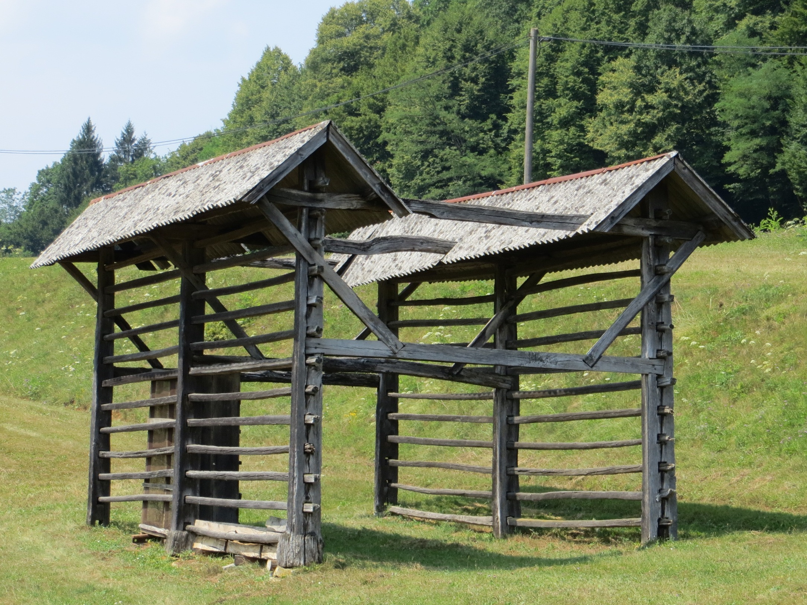
斯洛維尼亞國寶：雙聯乾草架（Toplar）
斯拉夫木工工藝的極致結晶，完全不使用鐵釘的卡榫榫卯傑作
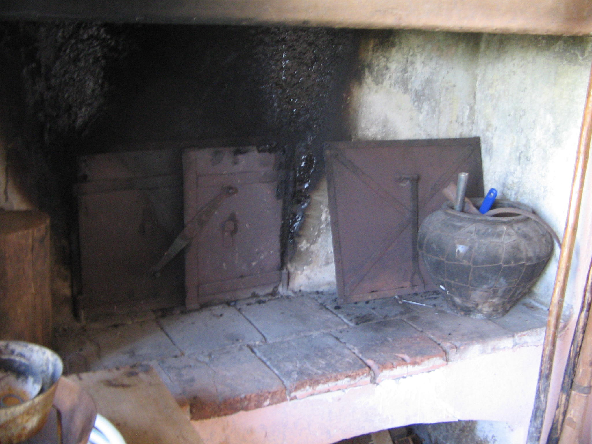
無煙囪黑廚房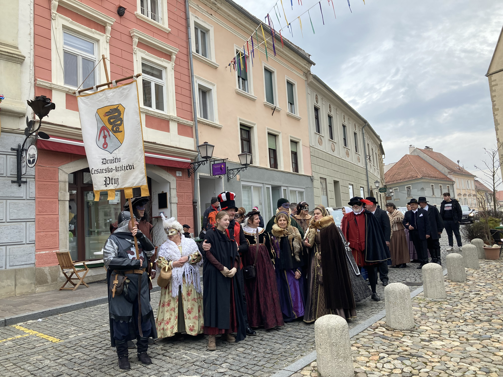
庫倫特面具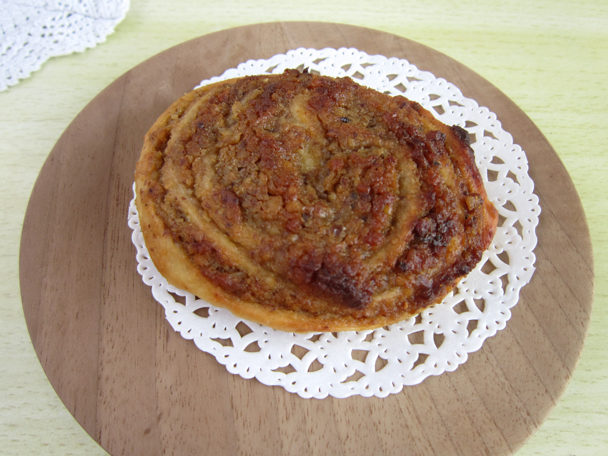
傳統 Potica
哈布斯堡與日耳曼遺產（Germanic / Habsburg）
阿爾卑斯高山酪農業與帝國農政秩序
數百年的哈布斯堡帝國統治，為斯洛維尼亞帶來了嚴密的林牧法規、條理化的農莊結構、精密水力磨坊與科學育種體系。
-
大高原牧民聚落（Velika Planina）：全歐現存最大且最古老的高山木瓦牧屋聚落，保留數百年夏季「高山輪牧（Planšarstvo）」傳統。
-
愛情定情起司（Trnič）：牧民在孤寂的高山以特製木模壓製成對的花紋起司，秋天下山時獻給心儀的姑娘象徵堅貞之愛。
-
皇家利比扎馬場（Lipica）：奧地利大公於喀斯特台地創立的世界級名馬育種莊園，展現精準的農業管理與草場生態平衡。
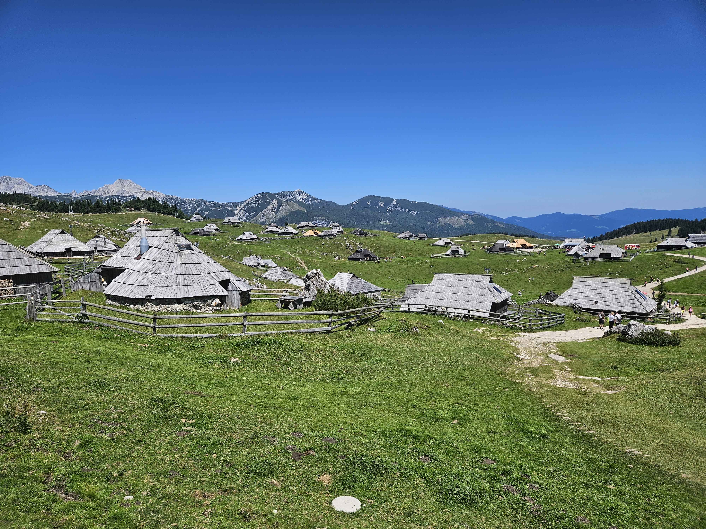
威利卡大高原牧民木屋（Velika Planina）
特殊的卵形松木瓦深挑簷設計，抵禦阿爾卑斯暴風雪的建築奇蹟
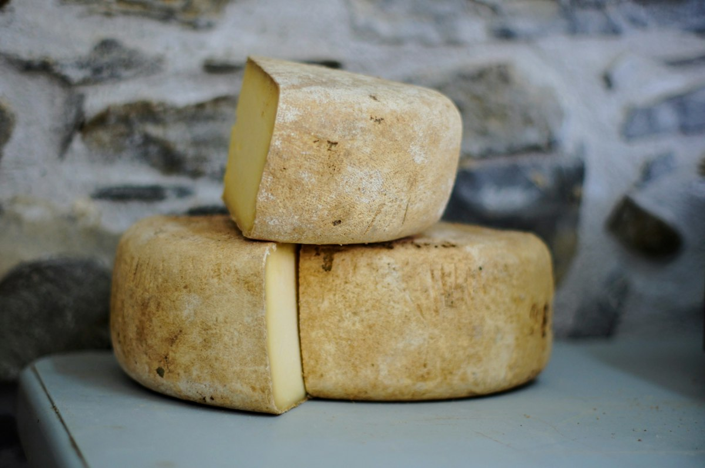
高山牧業起司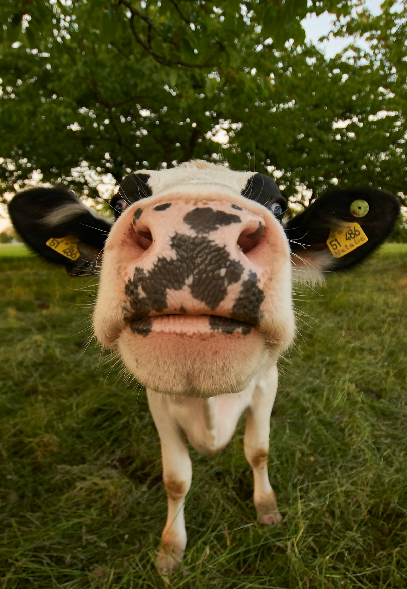
高山放牧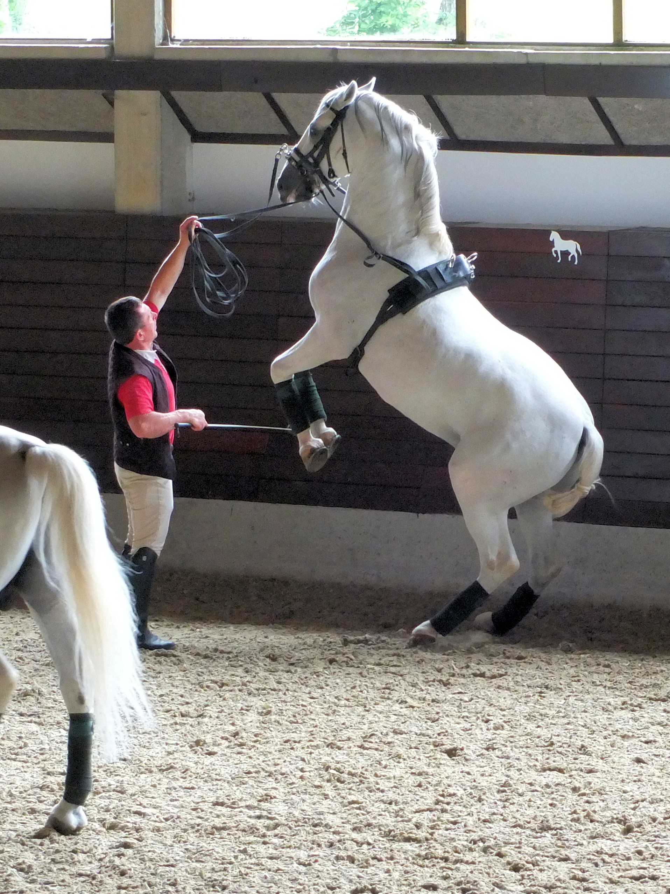
利比扎莊園
拉丁與威尼斯遺產（Latin / Mediterranean）
石灰岩、紅土、布拉強風與地中海慢釀
受到鄰近義大利威尼斯共和國與亞得里亞海的熏陶，喀斯特（Kras）與戈里齊亞布達（Goriška Brda）展現了濃郁的拉丁風土美學。
-
喀斯特防風石屋（Kraška domačija）：面對狂暴的「布拉風（Bora）」，農舍以巨石閉合圍築、石雕大拱門（Porton）與集雨石井（Štirna）護衛家園。
-
喀斯特風乾生火腿（Kraški Pršut）：只用海鹽與天然冷冽的布拉風自然風乾熟成12至24個月，肉質柔嫩、甘甜醇厚。
-
跨國界陶甕橙酒（Orange / Amber Wine）：在極東義大利與斯洛維尼亞邊境山丘，釀酒師以古羅馬與高加索陶甕長時間浸皮發酵，開創當代自然酒風潮。
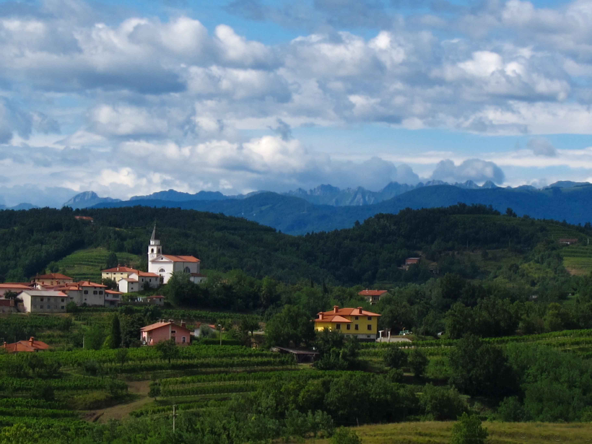
戈里齊亞布達（Goriška Brda）陽光丘陵
斯洛維尼亞的托斯卡尼，跨越義大利邊界的梯田葡萄園與橄欖莊園
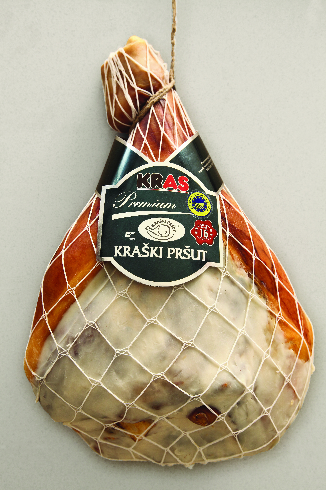
喀斯特火腿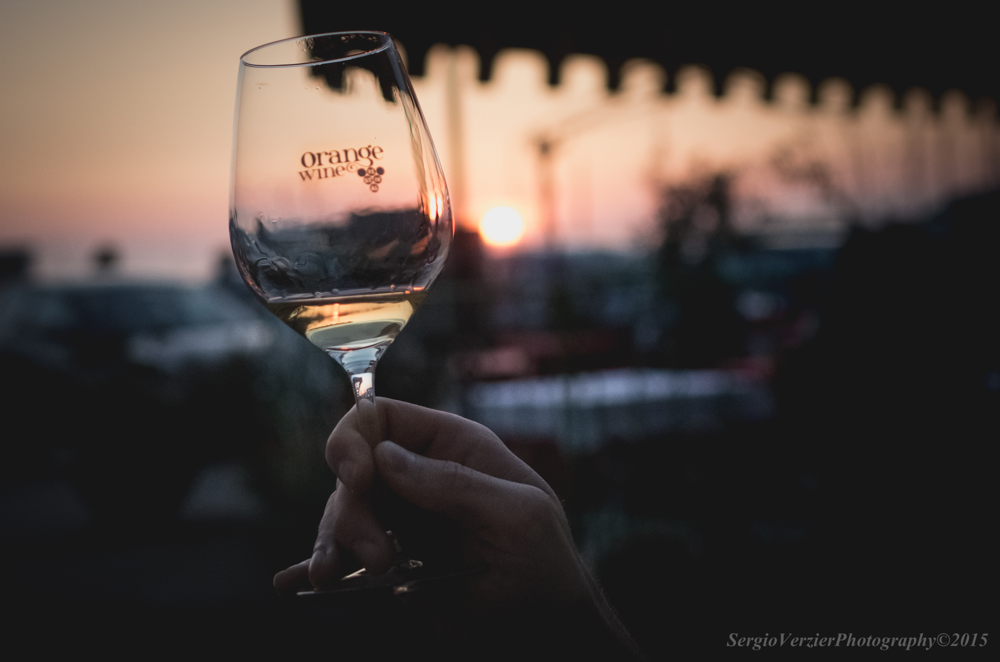
琥珀橘酒 石造農莊
石造農莊